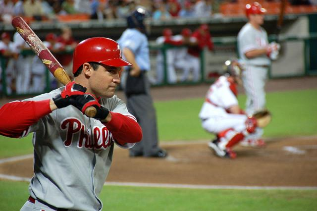
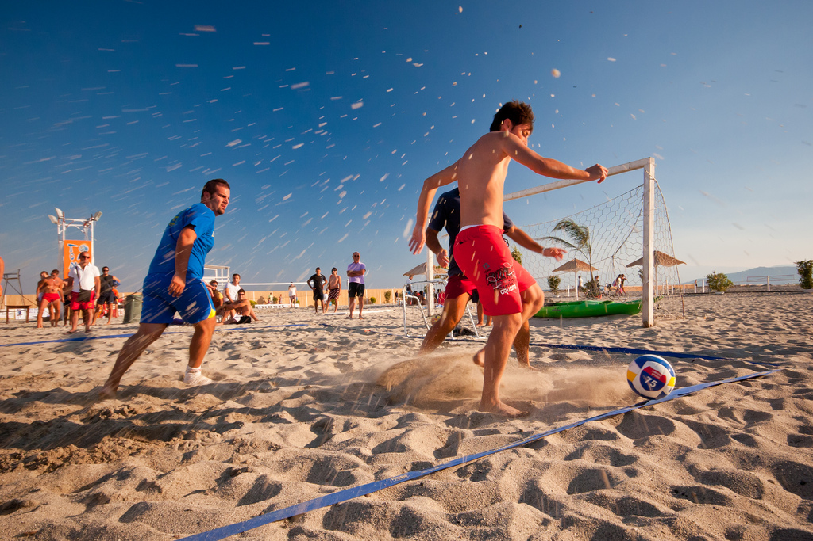
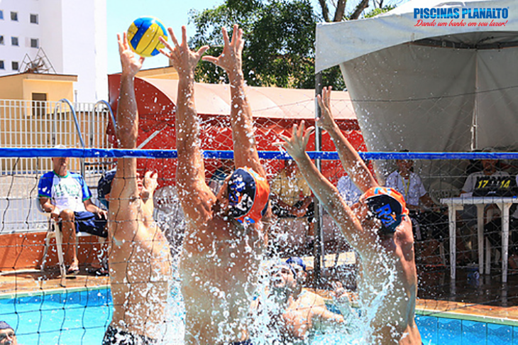
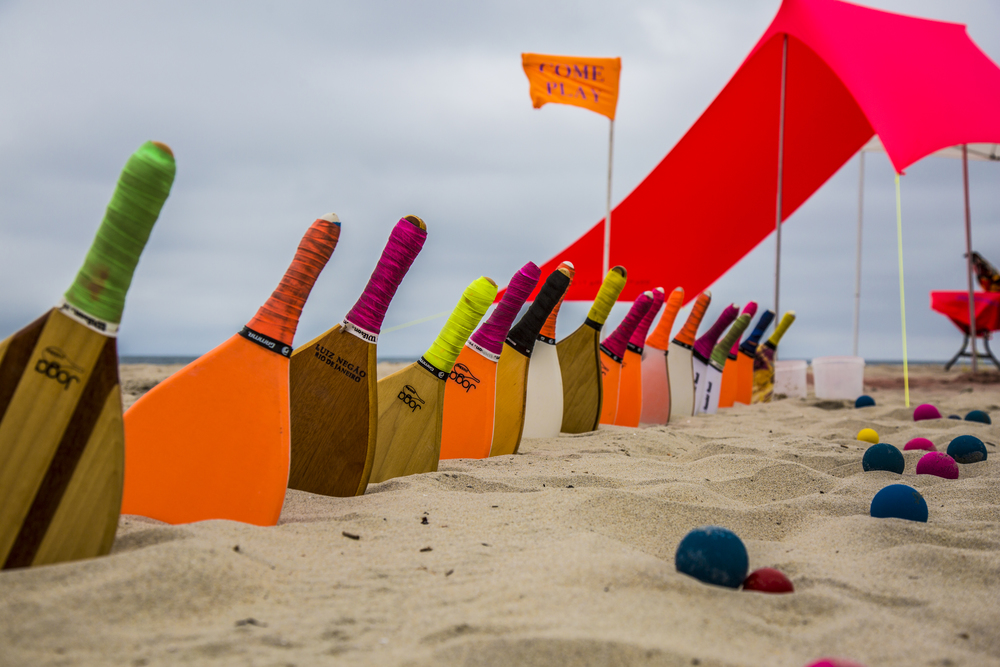

Tão antigos quanto o homem, o esportes são uma das invenções mais beneficas do homem. Alen de mandater o corpo saudável,ainda auxiliam na criação de uma série de comportamentos positivos, como a humanidade a unão , a empatia, dentre outros
| Esportes | Origem | Ambiente | Objetivo | Equipe | ||
|---|---|---|---|---|---|---|
| 1 |  | basebol | EUA,1971 | Campo com1/4 de círculo ,de 92 a 108,2m de raio | Reaizar o maior número de corridas. | Nove jogadores em cada time. |
| 2 |  | Beach soccer | 1930 Brasil | Quadra de areia com 35 ou 37m x 26 ou 27 de largura | realizar gols no campo adversário | Cinco jogadores em cada time. | 3 |  | biribol | 1968 Brasil | Picina com 4 x 8 x1,3m | Derrubar a bola na quadra do diversário | 2 a 4 jogadors por time |
| 4 |  | frescobol | Brasil 1946 | Ao ar livre | Manter a bola no ar pelo maior tempo possível. | Geralmente um contra um |